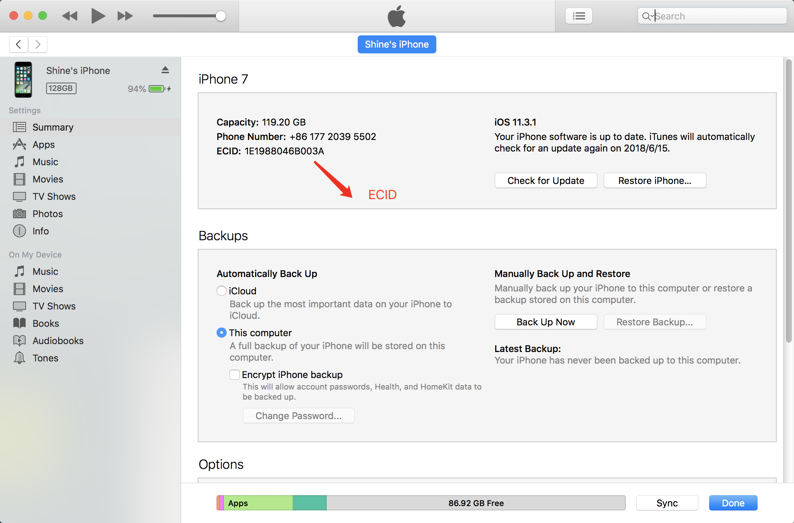
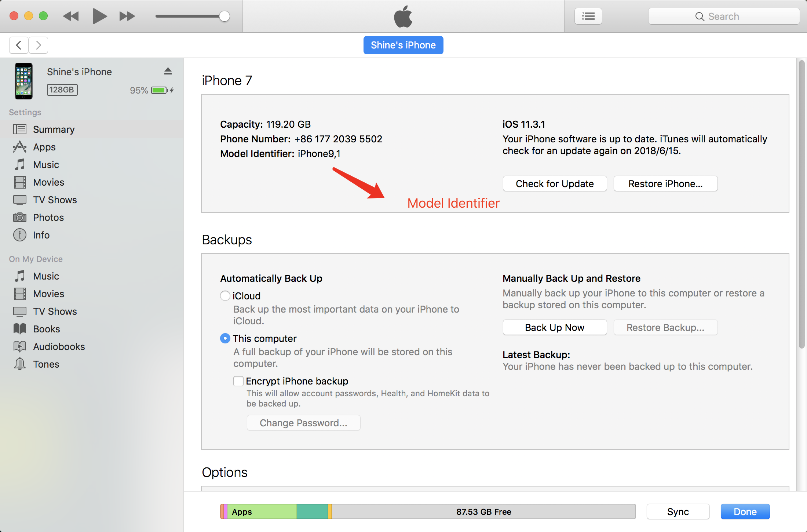
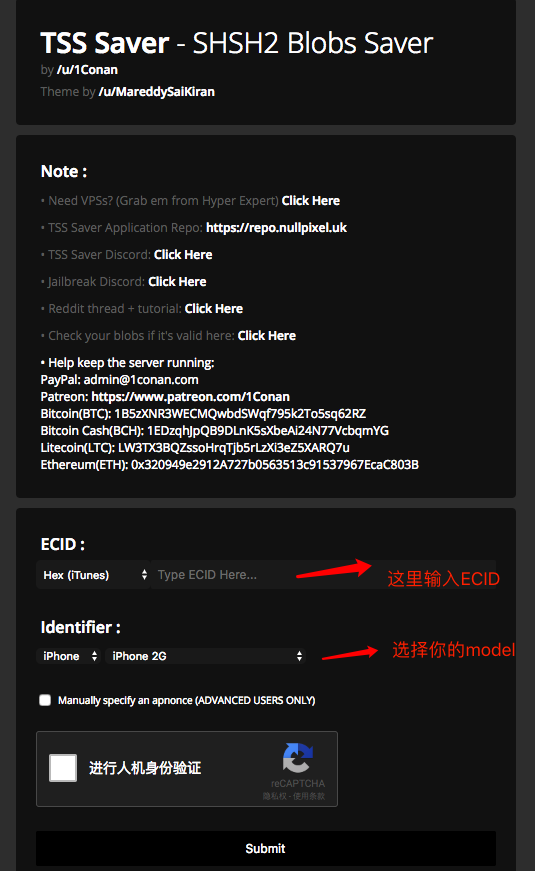

[TOC]
写在前面: 最近国外的coolStar大神即将发布iOS 11.3.1的越狱工具，借此机会特别想再玩一把越狱系统。记忆中还是当年iOS 7的是年代越狱了我的iPhone 5(人生用的第一个iPhone手机, 当时还是iOS6的年代, 大四实习的时候辛苦攒钱买来的)，在那个年底个人感觉越狱还是有必要的，因为当时刚出iOS7系统，安卓上好多好玩的东西苹果上还没有。 然后从iOS 8到iOS 11我就再没越狱过手机了，其实对普通用户来说，越狱的必要性越来越小了。但是如果作为一个开发者，特别是对逆向这个方向有兴趣的话，我觉得还是很有必要越狱后研究一番的。 今天我要写的是在你的手机越狱之前如果保存SHSH blobs？
什么是SHSH blobs, 做什么用的？
参照维基百科上的解释: SHSH blob文件是苹果用于升级和恢复系统的验证机制的数据文件，用来控制哪些版本的系统可以安装到iOS设备上，一般来说苹果只允许安装最新的系统。这套机制是被TATSU(“TSS”)验证服务(gs.apple.com)管理的，只能通过iTunes安装或者恢复苹果签名过的系统版本. 而越狱开发者围绕这套流程制作了第三方的工具，可以用SHSH blob文件安装以前的可越狱的并且被Apple关闭验证的系统版本。
我们可以简单理解，SHSH blobs文件是用来打破苹果的限制降级系统版本的。 例如苹果某个系统版本已经关闭验证了（我在写这篇文章的时候，苹果刚关了11.3.1的验证,所以如果你的系统已经不是11.3.1系统版本了，你就无法再升级或者降级到11.3.1版本了，除非你之前有保存SHSH blob文件）。
如何备份SHSH blobs?
存blobs切记一定要在苹果关闭当前版本验证之前，否则貌似就是保存不了了，我猜测存储SHSH blobs也要走苹果某个服务验证. 我以iOS 11.3.1举栗子，操作步骤:
第一步:获取 ECID
- 首先你得有台PC，安装上iTunes, 连上手机,进入summary,单击Serial Number那一栏，一直等到出现ECID之后，复制拿到ECID.
第二步:查看Model Identifier
- 跟上面步骤一样，还是在iTunes里，单击summary那一行,等到出现Model Identifier.这就是你的Model Identifier。
第三步:存储SHSH blobs
- 进入网站https://tsssaver.1conan.com
- 粘贴你的ECID到ECID那一栏,注意选择框是选择Hex(iTunes).
- 选择你的iPhone Model Identifer. 就是第二步刚刚看到的.
- 然后submit. 你就会跳转到一个下载页面, 你的SHSH blobs就存在那个网盘里了。
 )
)
需要下载下来自己保存吗？
不用，这个服务器会为你存储，以后就只需要进入刚才那个page, 下面有个Lost your link ,输入你的ECID, 即可找回你的blobs，还是很方便的。还有就是一旦你将你的ECID上传到这个服务器后，以后苹果每发布一个新的系统，服务器都会自动为你保存各个版本的blobs,你都不用再做什么了, 这是多么棒的一件事情. ok，SHSH blobs文件我们已经知道如何存储了。我们就可以放心的去享受越狱了，哪怕以后系统升级了，越狱没了。还可以有办法降级回来了！